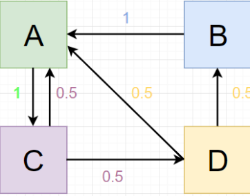

With supporting text below as a natural lead-in to additional content.
With supporting text below as a natural lead-in to additional content.
With supporting text below as a natural lead-in to additional content.
The PageRank of u, is updated based on the incoming links from other websites. These websites transfer a fraction of their importance. PR(v) is the pagerank of v which is divided by L(v), the number of outgoing links. All pageranks are summed up and the value of the new pagerank of u is calculated.
What this equation doesn’t include: damping factor and weighted linkage Damping factor takes into account the user stop browsing. It’s the probability that the user keeps on browsing and clicking links. The damping factor fraction of the website’s pagerank is then distributed in the entire system, because the user can start reusing the internet at any of the websites. Also in our equation, we weigh each link equally.
Directional Graph - websites are nodes, links are edges. Calculated using current pagerank values Below is a sample network and calculated pageranks for each website
| Round 3 | Round 4 | Round 5 | Round 6 | Round 7 | Round 8 | |
| A | 0.256 | 0.375 | 0.316 | 0.377 | 0.316 | 0.362 |
| B | 0.0625 | 0.0625 | 0.125 | 0.064 | 0.094 | 0.079 |
| C | 0.50 | 0.256 | 0.375 | 0.316 | 0.377 | 0.316 |
| D | 0.125 | 0.25 | 0.128 | 0.188 | 0.158 | 0.189 |